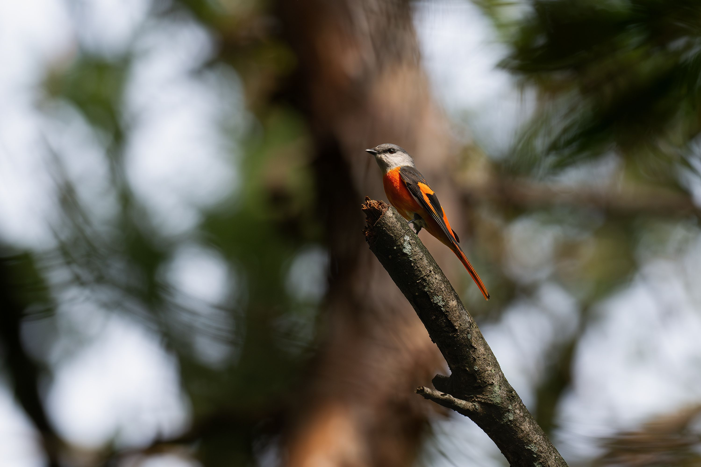

The Small Minivet is a tiny, brightly coloured canopy-dwelling bird. Males have vivid orange-red markings contrasting with black and grey, while females are predominantly yellowish and grey. They are highly active and often travel through the treetops in small groups, catching insects among leaves and branches. Its small size and delicate build distinguish it from larger minivets, while the male's bright orange-red markings and the female's yellowish plumage are useful identification features. Compared with the similar Indian Paradise Flycatcher, it is distinguished by the combination of features described above. Its preference for forests, woodland, plantations, gardens, and tree-covered areas also helps separate it from species that use different habitats. Its characteristic behaviour, including active and social; often moves through the canopy in small mixed or single-species groups, provides another useful field clue. Taken together, these differences make it easier to distinguish from similar species when the bird is seen clearly.